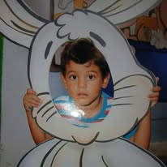

Uma vida, muitos ofícios, um só nome no céu
Lucio Miguel — pedagogo, fisioterapeuta, físico, astrônomo, astrólogo, especialista em direito trabalhista, caminhoneiro e dono da loja de fogos mais conhecida da região.
Carpina · Pernambuco
role para conhecer a história ↓
Tem gente que nasce sabendo o que quer ser. Lucio Miguel não. Ele nasceu em Carpina querendo ser tudo — e, de um jeito ou de outro, foi tentando ser tudo, um curso de cada vez, um diploma de cada vez, um emprego de cada vez.
Formou-se em Pedagogia porque queria ensinar. Formou-se em Fisioterapia porque queria cuidar. Estudou Física e Astronomia porque, à noite, depois de tanto trabalho, o céu de Carpina era a única coisa que parecia ficar parada o suficiente para ser entendida. Aprendeu Astrologia sem largar a Física — porque uma explicava as estrelas, e a outra, o que elas faziam com as pessoas. Estudou Direito Trabalhista porque viu gente demais sendo mal tratada no trabalho e quis, pelo menos, saber nomear a injustiça. Rodou o Brasil de caminhão porque, às vezes, ficar parado doía mais do que dirigir a noite inteira.
Ninguém decora um currículo desse tamanho por vaidade. Decora porque nenhum título, sozinho, resolveu a pergunta que ele carregava: onde eu sirvo? E foi na loja de fogos, um negócio pequeno que cresceu quase sem querer, que ele encontrou uma resposta possível. Um fogo de artifício dura poucos segundos. Ilumina, é bonito, todo mundo olha para cima — e depois se apaga, sem cobrar satisfação de ninguém. Talvez seja por isso que Zuza escolheu vender exatamente aquilo: instantes de luz, sem exigir que durem.
Hoje, quando alguém em Carpina precisa de fogos para comemorar alguma coisa, é dele que se lembram primeiro. É uma história triste contada de trás para frente: um homem que tentou ser útil de tantas formas diferentes até entender que sua vocação sempre foi a mesma — dar às pessoas um motivo, por alguns segundos, para olhar para cima.

Licenciatura voltada ao ensino e à formação de pessoas.
Formação em reabilitação e cuidado do corpo.
Estudo dos astros e dos fenômenos celestes.
Formação em ciências exatas, base para os estudos seguintes.
Estudo da relação entre os astros e a vida das pessoas.
Conhecimento voltado à defesa dos direitos do trabalhador.
Anos de estrada, transportando carga por todo o país.
Fundador e proprietário de uma loja de fogos de artifício reconhecida mundialmente.
Fogos Zuza — luz para todas as ocasiões
De festas juninas a réveillons, de aniversários a casamentos: a loja de Zuza Fogos é referência em Carpina para quem quer transformar uma data comum em um momento inesquecível — mesmo que dure só alguns segundos no céu.